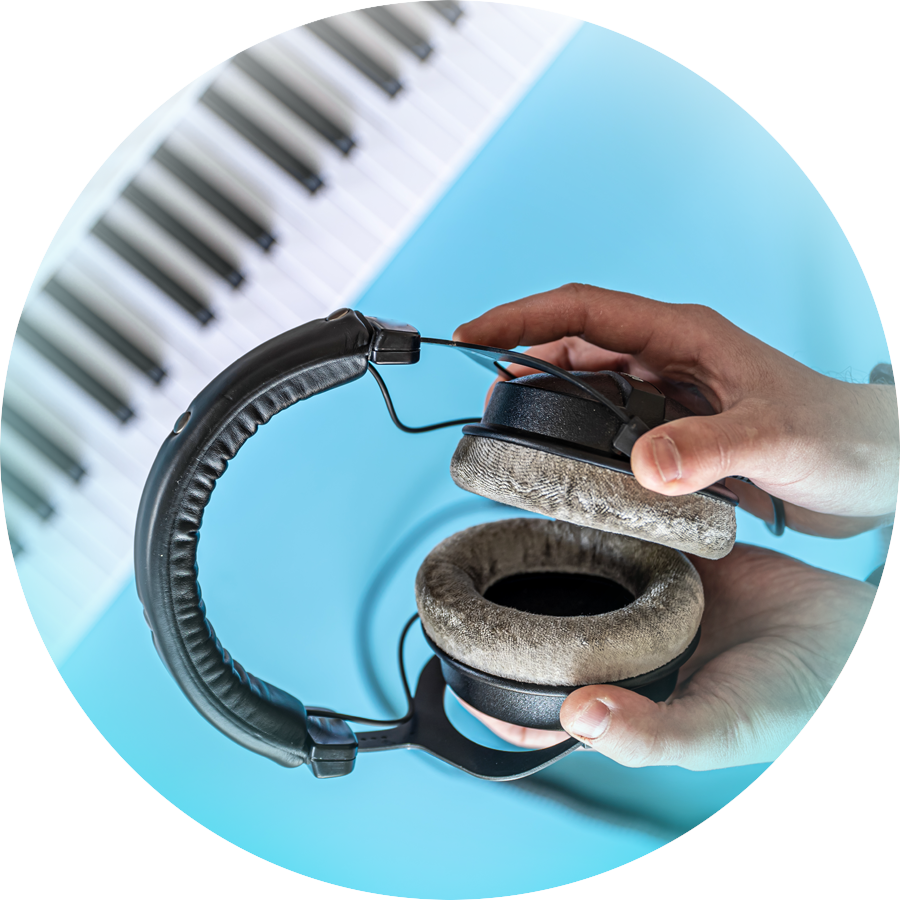
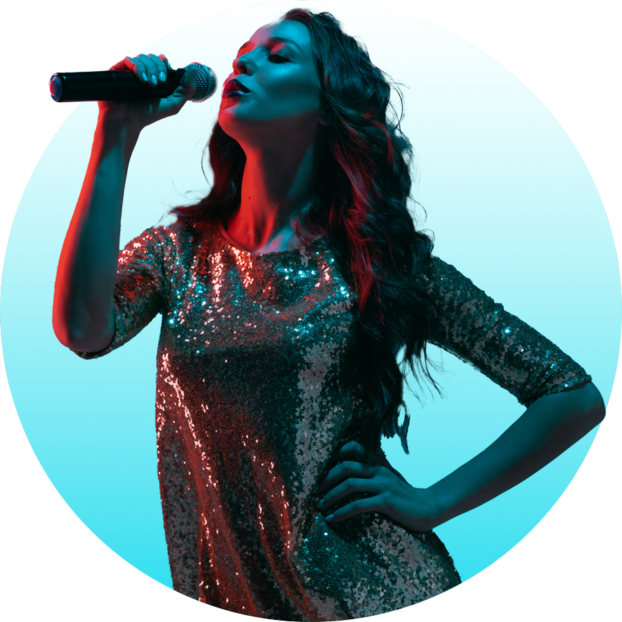

Deja que nos encarguemos de producir tu música, y dedicate a la creatividad.
JUYOW Studio cuenta con la mejor tecnología para hacer de tu carrera musical un éxito de calidad mundial.


Nuestra trayectoria de mas de 10 años nos respalda, y el éxito de nuestros clientes define nuestra calidad. Puedes utilizar nuestros servicios para crear desde una simple pista, hasta el mejor album que tendrá tu carrera, todos nuestros productores, músicos, ingenieros, y técnicos son artistas natos, con una lista interminable de éxitos que han realizado a traves de su carrera musical, ademas tenemos convenios con las mejores disqueras y plataformas musicales, para darle ese punch a tu carrera artística.
Contáctenos
Te damos un presupuesto
Éxito musical